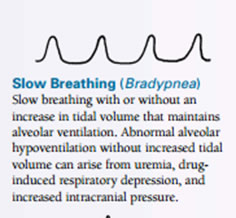
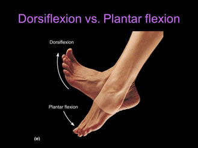
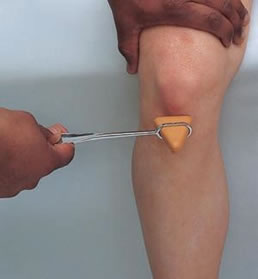

Teaching Method Dada
Teaching Method Dada
Cara Kerja
Inspeksi
Pemeriksaan
UMUM- Frekuensi napas (>25x/menit menandakan adanya takipneu)
- Lihat apakah ada sianosis pada mulut, lidah, mukosa oral, adanya clubbing finger
- Lihat di area leher ketika uskultasi apakah ada penggunaan otot aksesori pernafasan, adanya kontraksi interkosta,
- Lihat apakah trakea ada di tengah
DADA
- Lihat adanya deformitas atau pengembangan dada yang asimetris
- Lihat apakah ada unilateral lag/delay dari ruang intercostal ketika pengambilan dan pengeluaran pernapasanmenandakan adanya asthma.
Gambar

Cara kerja
Palpasi
Pemeriksaan :
- Palpasi apakah ada nyeri tekan
- Kaji adanya memar, maupun perubahan kulit
- Pantau adanya krepitus => fraktur
- Pantau adanya abnormalitas pada kulit (kemerahan, masa)
- Cek ekspansi dada => ada delay atau tidak, simetris atau tidak
- Cek taktil fremitus => taktil fremitus menurun menandakan adanya obstruksi jalan napas
LOKASI PEMERIKSAAN TAKTIL FREMITUS
Cara kerja
Palpasi
Pemeriksaan :
- Normalnya resonan
- Dullness =>terjadi ketika udara di paru-paru tergantikan dengan massa maupun cairan => contoh pada kasus empyema, efusi pleura, dll
Area yang diperkusi
Cara kerja
Palpasi
Pemeriksaan :
- Dengar suara nafas, ritme, kedalaman
- Kaji apakah ada suara napas tambahan => crackels, wheezing, rhonci, stridor
- Vesikular => lembut dan rendah
- Bronchovesikular
- Bronchial
- Tracheal


Pemeriksaan :
Inspeksi dan Palpasi Keadaan Ekstrimitas
Cara Kerja :
- Melihat apakah pasien menggunakan alat bantu jalan seperti tongkat dan pada sisi sebelah mana
- Menilai apakah posisi tubuh pasien lurus ataukah terdapat kemiringan pada daerah pelvis
- Membandingkan warna kulit pada sendi dan daerah sekitar, nilai ada tidaknya hematom, echymosis, ulkus dll
- Menilai tanda-tanda kontraktur fleksi pada hip/panggul, lutut dll
- Menilai ada tidaknya edema

Alat bantu jalan

Ulkus diabetikum

Kontraktur sendi lutut

Edema kaki (pitting edema)
Pemeriksaan :
1) Pangkal paha : abduksi, adduksi, rotasi ke dalam, rotasi keluar
Cara Kerja :
- Adduksi: menggerakkan anggota gerak mendekati bagian tengah tubuh (medial).
- Abduksi: menggerakkan anggota gerak menjauhi bagian tengah tubuh (lateral).
- Rotasi : menggerakkan sendi dengan cara memutar pada sumbu vertikal tulang. Gerakan rotasi dapat bergerak ke dalam (internal) maupun ke luar (eksternal).


2) Lutut : fleksi, ekstensi (depan belakang)
- Fleksi: merupakan gerakan menekuk sendi atau memperkecil sudut antar dua tulang.
- Ekstensi: merupakan kebalikan dari fleksi yaitu memperbesar sudut antar dua tulang.

3) Pergelangan Kaki : Dorsifleksi, Plantar Fleksi, Inversi, eversi
- Dorsofleksi: menggerakan telapak kaki ke arah depan atau atas.
- Plantarfleksi: kebalikan dari dorsofleksi yaitu menggerakkan telapak kaki ke bawah atau belakang.
- Inversi: menggerakkan sendi kaki ke arah dalam.
- Eversi: menggerakan sendi ke arah luar.


4) Jari kaki : ekstensi, fleksi, Abduksi, adduksi
- Fleksi: merupakan gerakan menekuk sendi atau memperkecil sudut antar dua tulang.
- Ekstensi: merupakan kebalikan dari fleksi yaitu memperbesar sudut antar dua tulang.
- Adduksi: menggerakkan anggota gerak mendekati bagian tengah tubuh (medial).
- Abduksi: menggerakkan anggota gerak menjauhi bagian tengah tubuh (lateral).

Pemeriksaan :
1) Refleks Patellar
Cara Kerja :
- Minta klien duduk ditepi meja periksa agar kaki klien dapat menjuntai dengan bebas tidak menginjak lantai.
- Tentukan lokasi tendon patella yang berada tepat dibawah patella (tempurung lutut).
- Ketukkan reflek hummer langsung pada tendon patela.
- Amati adanya ektensi kaki atau tendangan kaki yang normal. 
Refleks Patella
2) Refleks Achilles
- Minta klien duduk ditepi meja periksa agar kaki klien dapat menjuntai dengan bebas tidak menginjak lantai.
- Dorsofleksikan sedikit pergelangan kaki klien dengan menopangkan kaki klien pada tangan Pemeriksa.
- Ketukkan reflek hummer pada tendon Achilles tepat diatas tumit.
- Amati dan rasakan plantar fleksi (sentakan kebawah) yang normal pada kaki klien.

Refleks Achilles
3) Kekuatan Otot Kaki
Inspeksi dan Palpasi

Dropdown content#1